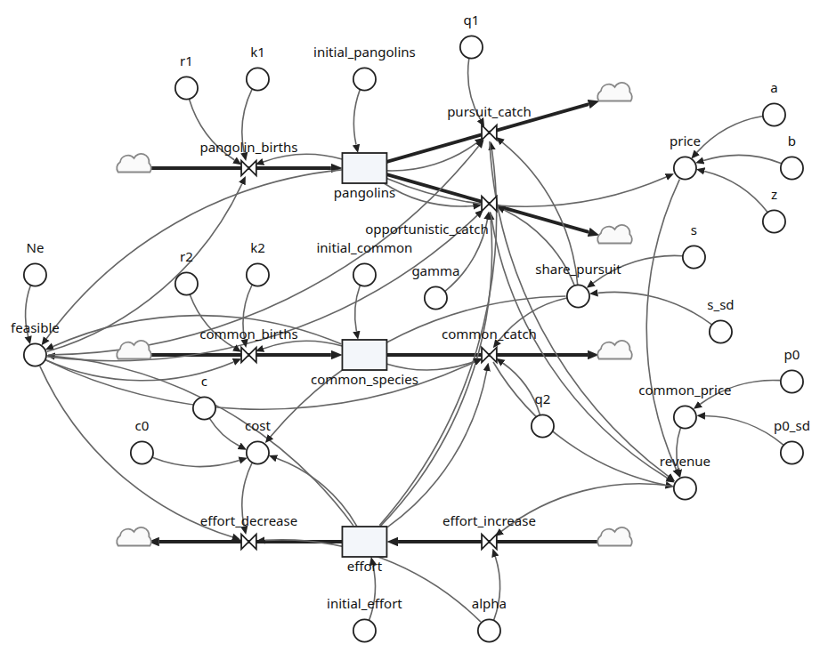

Pangolin harvest
How harvesting can drive a rare species extinct. Hunters take pangolins, a rare species, and a common species alongside them. Their effort grows while revenue exceeds cost, and the price of a pangolin rises as pangolins get rarer, so the rarer they become the more they are worth hunting. Some hunting is in pursuit of pangolins; the rest takes them opportunistically while hunting the common species.
A published model, converted from the authors’ R script and checked against it step for step. Its three equations (pangolins, the common species, harvest effort) are drawn as flows: births and catches, and effort rising with revenue and falling with cost. Every symbol in the paper is a parameter under its own name; s is the share of hunting that is pursuit. The defaults are the paper’s pangolins, a slow-growing common species, a weak link between rarity and price, and s = 0.5.
Run it with a time step of 0.1 for 50 years, and plot pangolins and common_species. Then change s, or the price parameters a, b and z, and see how soon the pangolins go.
The model spec: pangolin.json.
Published in
Almeida, R. J., Bonachela, J. A., & Lockwood, J. L. (2023). Multiple co-occurring bioeconomic drivers of overexploitation can accelerate rare species extinction risk. Journal of Applied Ecology, 60(5), 754–763. https://doi.org/10.1111/1365-2664.14376
Supporting information, the authors’ R script for the model: Almeida, R., Bonachela, J., & Lockwood, J. (2023). Multiple co-occurring bioeconomic drivers of overexploitation can accelerate rare species extinction risk [Dataset]. Dryad. https://doi.org/10.5061/dryad.0p2ngf25b
